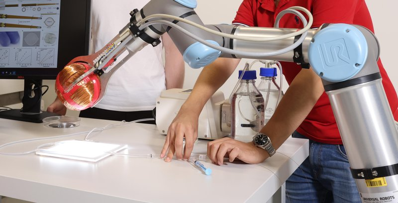

Magnetic navigation · magflow_pancaldi2025
MagFlow
MagFlow flow-driven magnetic microcatheter + OmniMag steering platform

1 / 7


- Family
- Magnetic navigation (magnetic-navigation)
- Devices
- inflatable flat-tube microcatheter, head width 150-250 um; fed through a 2.7 Fr (0.7 mm lumen) delivery microcatheter inside a 5 Fr guide catheter
- Degrees of freedom
- OmniMag: spherical rotor with permanent magnet oriented by three orthogonal coils, mounted on a collaborative robot arm
- Push
- Other drives
- Twist
- Field direction
- Tested up to
- Animal
- Sim-to-real
- None found — No simulation-trained controller found for this robot.
Testing
- Highest level
- Animal
- What was tested
- porcine in vivo under X-ray; six branches repeatedly steered in vertebral region; navigated 180 um arteries and a 500 um hairpin with 0.69 mm radius; superselective contrast and embolic infusion
- Key numbers
- OmniMag 3.7 mT at 2 A, 1.7 N m torque on the magnet; average field during steering 5.7 +/- 1.4 mT; arteries as small as 180 um; min curvature radius 0.69 mm
Mechanism
- Push (translation)
- other: blood-flow carried; no pushed shaft
- Twist (rotation)
- field direction
- Device range
- N.R.
- Target anatomy
- distal cerebral / spinal arteries, porcine model
Sensing and interface
- Force sensing
- none
- Leader and haptics
- no
- Imaging
- bi-plane fluoroscopy compatible
- Sterility
- N.R.
Size
- Footprint (mm)
- N.R.
- Mass (kg)
- N.R.
Simulation
- Simulation model
- none found
- Sim-trained controller
- none found
Versions
- Lineage
- arXiv 2508.05312
Sources
- Flow-driven magnetic microcatheter for superselective arterial embolization · link [pancaldi2025_flowdriven]
Notes
- Notes
- Smallest device in my scope; there is no bedside push drive.
This record
- Read level
- full — full (abstract, platform and in vivo sections)
- Picture
- EPFL news "Microcatheter delivers therapies to the tiniest blood vessels" (actu.epfl.ch/news/microcatheter-delivers-therapies-to-the-tiniest-bl), image 158504 original 7678x5121 (OmniMag on a UR arm over the light pad, stylus, pump) — licence: CC BY-SA 4.0 (EPFL/Alain Herzog); grade A
- Picture changes
- crop removing the operators faces, downscaled 50 %
- Found by
- actuated-tip: Search of actuated-tip and magnetic devices.
- Data
- JSON · YAML:
records/robots/magflow_pancaldi2025.yaml - Correction
- Suggest a correction [repository not created yet]